地政学
コンゴ川を挟んでブラザヴィルと向き合う首都は、内陸国家の海への出口、東部紛争、鉱物資源、国際機関、近隣諸国との交渉を受け止める。川辺の景色の背後に、国家統治の重い距離と広い生活圏がある都市です。今も。
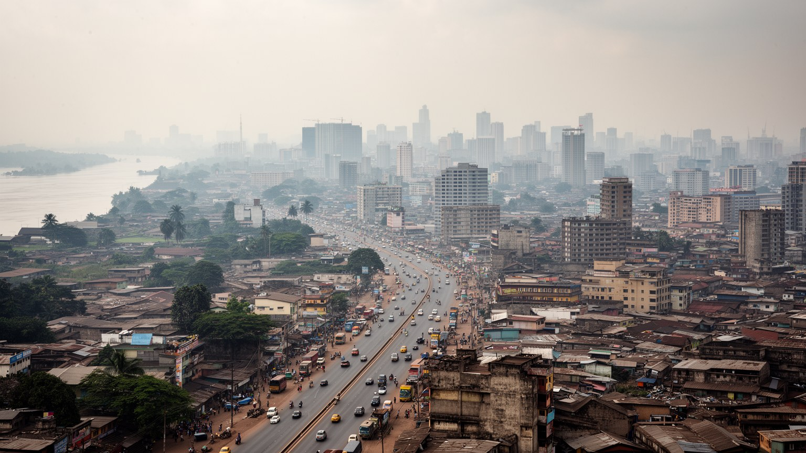
🇨🇩 コンゴ民主共和国 / 中部アフリカ / World City Atlas
コンゴ川の南岸で国家政治、リンガラ語の音楽、非公式経済、急速な住宅成長、宗教、交通混雑、水害が重なる、世界最大級のフランス語圏都市。
都市の骨格
キンシャサはコンゴ川のプール・マレボに面し、対岸のブラザヴィルと向き合う首都です。国家の中枢、地方からの移住、音楽と礼拝、路上市場、未整備な交通と住宅が、川沿いから内陸へ広がります。
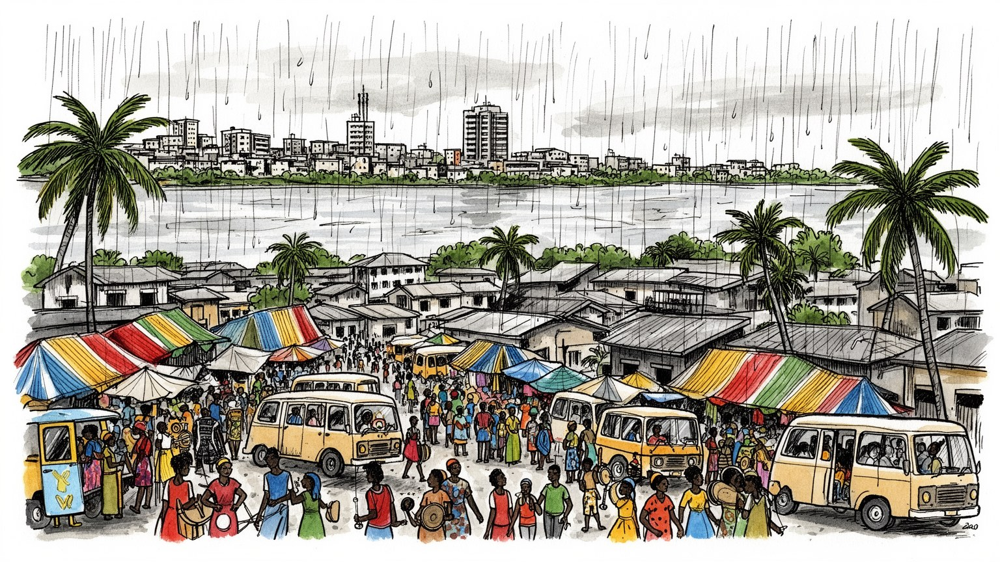
コンゴ川を挟んでブラザヴィルと向き合う首都は、内陸国家の海への出口、東部紛争、鉱物資源、国際機関、近隣諸国との交渉を受け止める。川辺の景色の背後に、国家統治の重い距離と広い生活圏がある都市です。今も。
行政、銀行、通信、建設、卸売、小売、運輸、音楽、飲食、修理、屋台が都市を動かす。正規雇用は限られ、露店、バイクタクシー、家内商売、日雇い、送金に支えられた非公式経済が暮らしの中心です。若者も多い。
リンガラ語の歌、ルンバ、ンドンボロ、サップ、説教、教会合唱、路上の冗談が街の声を作る。カトリック、プロテスタント、復興教会、イスラム、祖先への記憶が重なり、音楽と信仰は公共空間を満たす。夜も響く。
旅行者は川辺、国立博物館、市場、音楽の夜、アート空間をたどる。住民には渋滞、停電、断水、物価、学校、医療、治安、雨季の浸水が日々の条件になる。観光は熱気と脆さを同時に見る入口です。川風もある都市。
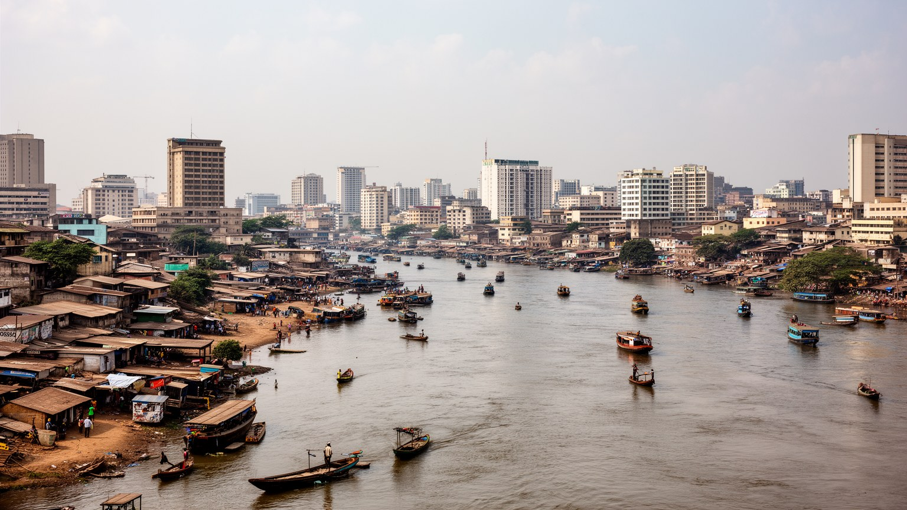
キンシャサはコンゴ川の南岸、広い水面を持つプール・マレボに沿って広がる首都である。対岸にはコンゴ共和国のブラザヴィルがあり、二つの首都が橋で結ばれないまま、フェリー、外交、商取引、家族関係、国境管理で向かい合う。この地理はキンシャサを単なる内陸都市ではなく、川を通じて大西洋、中央アフリカ内陸、鉱物地帯、農村市場へつながる政治的な水辺にしている。川は魚、砂、輸送、洗濯、涼しさを与える一方、浸食、洪水、事故、汚染も運ぶ。官庁街や大使館の近くに川の景色があり、少し離れれば未舗装の道、露店、拡張する住宅地が続く。国家の中心でありながら、地方との距離は長く、東部の紛争や鉱山の収益は首都の会議室と街角の生活の間で別の速度を持つ。キンシャサを読むには、川を絵になる背景としてではなく、政治、物流、境界、生活水、危険が集まる都市の骨格として見る必要がある。水面の広さは開放感を作るが、対岸との近さは国境の現実も見せる。川辺の計画、港の整備、船着き場の安全、低地の住宅対策は、首都の将来を左右する実務の課題である。さらに、川沿いの土地は高級開発にも低所得の住まいにも向けられ、誰が安全な水辺を使えるのかという公平性の問題を生む。巨大な川は都市に威厳を与えるだけでなく、統治の弱さと生活の工夫を毎日映し出している。
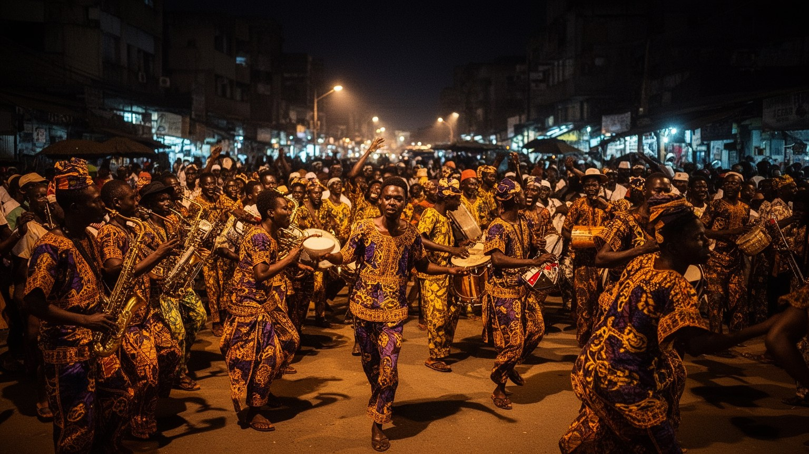
キンシャサの音楽は娯楽であると同時に、都市の歴史を記録する言語である。コンゴ・ルンバ、スークース、ンドンボロ、教会音楽、ヒップホップ、クラブの音が、リンガラ語の響きとともに街路、ミニバス、店先、結婚式、葬儀、ラジオを満たす。植民地期のレオポルドヴィルから独立後のザイール、内戦と経済危機を経た現在まで、音楽家は恋愛、政治、皮肉、成功、亡命、信仰、貧困、誇りを歌にしてきた。ギターのリフや合唱の熱は、都市の苦しさを消す魔法ではないが、人びとが自分たちの名前で世界に届くための力になった。音楽産業はスタジオ、衣装、ダンサー、映像、屋台、警備、交通、飲食を動かし、若者の仕事や夢も作る。ただし、機材、著作権、電力、会場、安全、政治的圧力、収入の不安定さは大きい。キンシャサを読むには、有名なスターだけでなく、練習場、教会の合唱隊、路上のスピーカー、動画配信を使う若者、客を集めるバーの労働を見る必要がある。音楽は都市のブランドではなく、渋滞や停電や家賃の中で、それでも人が踊り、冗談を言い、共同体を確認する方法である。衣装やダンスは成功への想像力を示し、海外のディアスポラとも結びつくため、街の表現は国境を越えて循環する。街の音量は時に過剰で、近隣の摩擦も生むが、その過剰さこそが首都の生存感覚を示している。
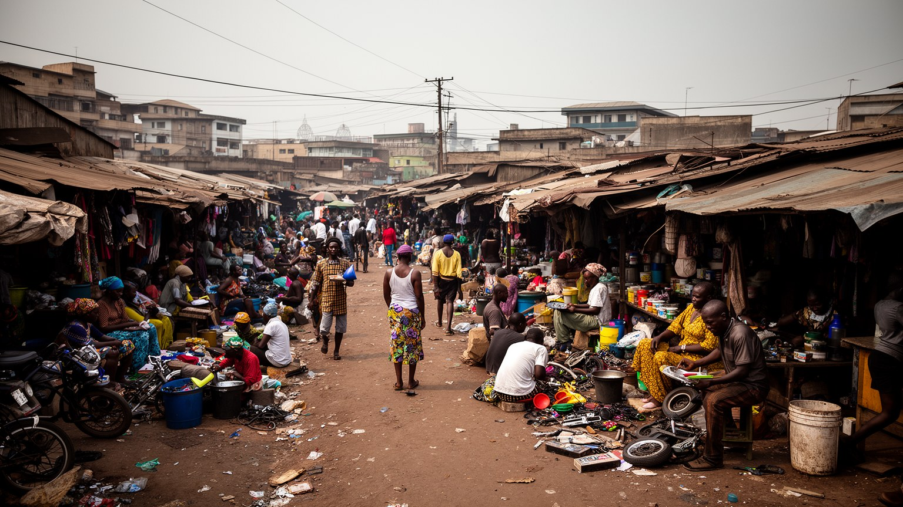
キンシャサの経済は、官庁、銀行、通信会社、建設現場、輸入商社だけで説明できない。多くの住民にとって暮らしを支えるのは、露店、野菜売り、携帯電話の修理、送金代理店、バイクタクシー、洗車、屋台、仕立て、荷運び、日雇い、家族からの支援である。非公式経済は税や規制の外側にある不安定な領域と見られがちだが、実際には食料、交通、情報、信用、育児、住まいを結び、巨大都市が止まらないための柔らかいインフラになっている。朝に商品を仕入れ、日中に売り、夕方に現金やモバイルマネーで家へ持ち帰る小さな循環が、何百万もの家庭を支える。同時に、この働き方は雨、警察の取り締まり、場所代、盗難、病気、為替、物価上昇に弱い。女性は市場と家庭の両方で大きな負担を負い、若者は学歴があっても安定した仕事に届かないことが多い。キンシャサを読むには、非公式性を都市の欠陥としてだけでなく、制度が届かない場所で人びとが作る実践として見る必要がある。ただし、それを美化してはならない。安全な歩道、清潔な市場、保育、少額融資、公共交通、税の透明性がなければ、工夫は疲弊へ変わる。輸入品の価格が変われば日用品の売値も変わり、通貨の揺れは小さな商売の在庫判断にまで届く。路上の活気は生きる力であると同時に、正式な都市サービスが不足していることの証拠でもある。
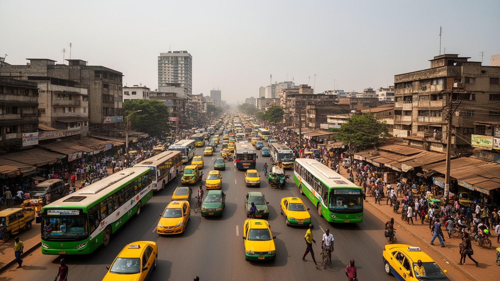
キンシャサの移動は、巨大都市の成長に交通インフラが追いつかない現実をはっきり見せる。中心部の大通り、郊外へ伸びる幹線、乗合バス、タクシー、バイク、徒歩、荷車が混ざり、通勤時間は天候、警察検問、道路の穴、燃料価格、事故で大きく変わる。市街地は西側の古い中心から東や南の新しい住宅地へ広がり、仕事、学校、病院、市場へ行く距離は長くなった。道路が混むと、労働時間、商品の価格、子どもの通学、医療への到着、救急車の動きまで影響を受ける。乗合交通は安く柔軟だが、過密、危険運転、運賃交渉、車両の老朽化、雨の日の混乱が日常である。徒歩の人は歩道の不足、排水溝、露店、車との接触にさらされる。キンシャサを読むには、道路を単なる渋滞問題としてではなく、都市の不平等を配分する仕組みとして見る必要がある。都心に近い人、車を持つ人、朝早く動ける人は機会に近く、遠い地区の住民ほど時間と体力を失う。交通改善は高架道路や広い車線だけで解けない。信頼できるバス、歩ける街路、排水、照明、交通警察の透明性、近隣に仕事と学校を置く土地利用が一緒に必要になる。夜の移動では照明と治安がさらに重要になり、女性や学生の行動範囲を狭めることもある。キンシャサの大通りは国家の威信を示す場所であると同時に、毎日の移動が都市参加の権利であることを示す場所でもある。
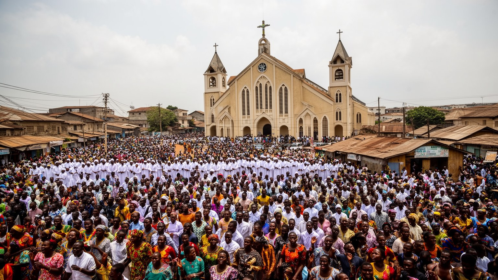
キンシャサの宗教生活は、日曜日の教会だけに限られない。カトリック、プロテスタント、キンバング主義、復興教会、ペンテコステ派、イスラム、伝統的な祖先への記憶が、家族、学校、音楽、政治、治療、葬儀、結婚、寄付を通じて都市に深く入り込む。教会は祈りの場であると同時に、移住者が相談し、若者が合唱や演奏を学び、失業や病気への不安を語り、近所の人間関係を作る場所でもある。礼拝の音は街の音楽文化とつながり、説教は政治への不満、成功への願い、倫理、家族責任を語る。宗教組織は教育や医療を補うこともあるが、献金の負担、奇跡や繁栄をめぐる商業化、ジェンダー規範、政治家との結びつきには注意が必要である。キンシャサを読むには、宗教を信仰の有無だけで判断せず、制度が弱い都市で人びとが不安、病、死、将来、共同体をどう扱うかを見る必要がある。夜の集会、葬儀の音楽、家庭での祈り、聖歌隊の練習は、都市の脆さを支える社会的な装置でもある。同時に、宗教は対立や排除を生むこともあり、公共性との関係を常に問われる。病院費や学費を助け合う小さな献金も、都市の福祉が足りない場所で重要な意味を持つ。キンシャサの礼拝空間は、希望を売る場所にも、苦難を分かち合う場所にもなり得る。その両義性が、急成長する首都の精神的な地図を形作っている。
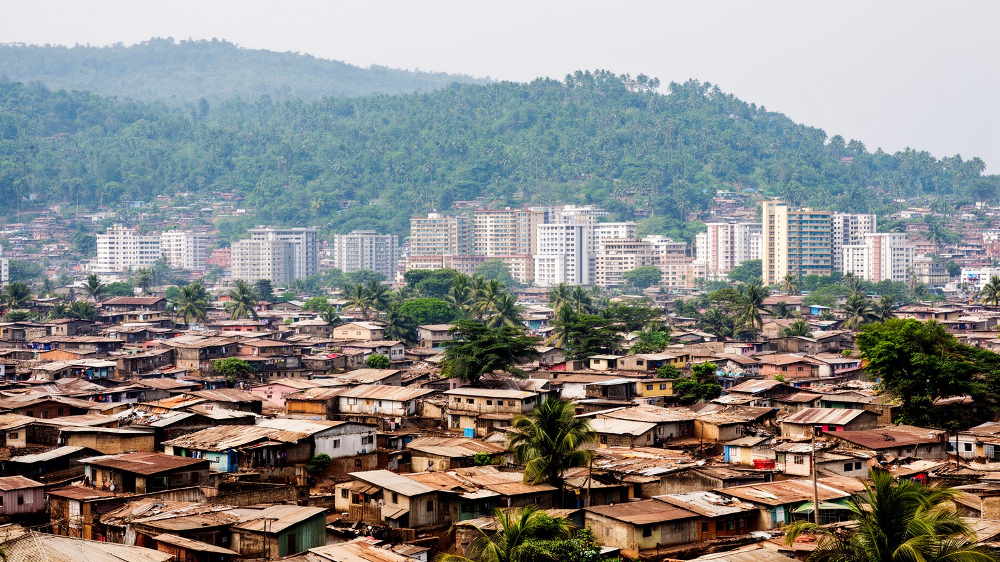
キンシャサの住宅地は、人口増加の速度をそのまま地面に刻んでいる。古い中心部の高密な地区から、東や南へ広がる新しい宅地、未舗装の道路、排水の弱い低地、丘陵地の開発まで、住まいは行政計画よりも先に広がることが多い。家族や知人を頼って移り住み、少しずつ土地を確保し、ブロックを積み、屋根を付け、電気や水を後から引く過程は、都市成長の現実である。住宅は単なる寝る場所ではなく、店、仕事場、貸間、学校への拠点、親族扶助の中心になる。しかし、土地権利の不確かさ、二重売買、道路不足、学校や診療所の遠さ、断水、浸水、廃棄物、停電は深刻である。急いで建てられた家は暑さや雨に弱く、低所得世帯ほど危険な場所へ押し出されやすい。キンシャサを読むには、無計画な拡張を住民の失敗と見るのではなく、正式な住宅供給が足りない中で人びとが都市に居場所を作る過程として見る必要がある。同時に、生活の工夫だけでは上下水道、排水、道路、学校、公共空間は整わない。都市計画は土地を区画する図面だけでなく、住民の既存のネットワークを壊さず、危険な場所を減らし、交通とサービスを近づける技術でなければならない。家の前の小さな商売や貸間収入は家計を支えるため、住宅政策は雇用政策とも切り離せない。キンシャサの郊外は未来の負担ではなく、すでに何百万人もの現在の生活である。
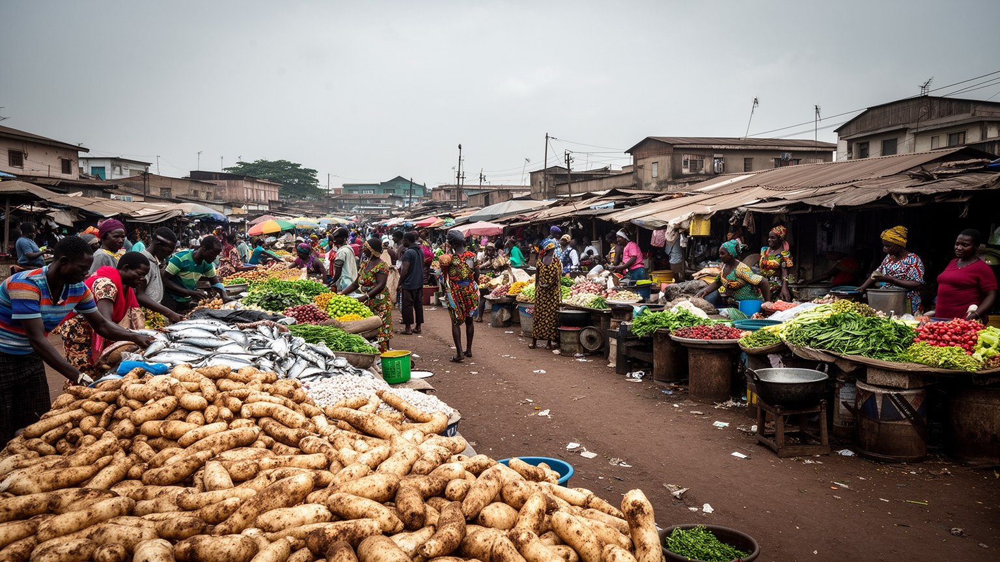
キンシャサの食は、巨大都市が遠い農村と川の流域に依存していることを教える。キャッサバのフフ、チクワンガ、ポンドゥ、魚、鶏、ヤギ、豆、バナナ、唐辛子、炭火の焼き物、路上の軽食は、家庭、屋台、市場、祝いの席をつなぐ。食材は周辺農村、コンゴ川の船、トラック、輸入品、都市近郊の畑から集まり、道路状況や燃料価格、雨、為替、治安によって値段が変わる。市場は買い物の場所であると同時に、情報、信用、噂、政治の不満、家族の近況が流れる公共空間である。女性の商人は都市の食料供給を支える中心だが、場所代、衛生、保育、暴力、警察、資金不足に向き合う。冷蔵設備や電力が不安定なため、食品の保存と安全も大きな課題になる。キンシャサを読むには、料理名だけでなく、食材がどの道を通り、誰が運び、誰が早朝から売り、どの家庭が何を買えなくなるのかを見る必要がある。物価上昇は抽象的な経済指標ではなく、鍋の中身、学校へ持たせる食事、屋台の量を変える。川魚が減った日や道路が壊れた日は、食卓の選択肢がすぐ狭まり、都市と自然のつながりがはっきりする。食卓の量も変わる。食文化は豊かで、音楽や家族行事と結びつく一方、栄養不足、食品価格、廃棄物、衛生の問題も抱える。市場の熱気は都市の生命力であり、同時に物流、公共衛生、所得の弱さを映す鏡である。
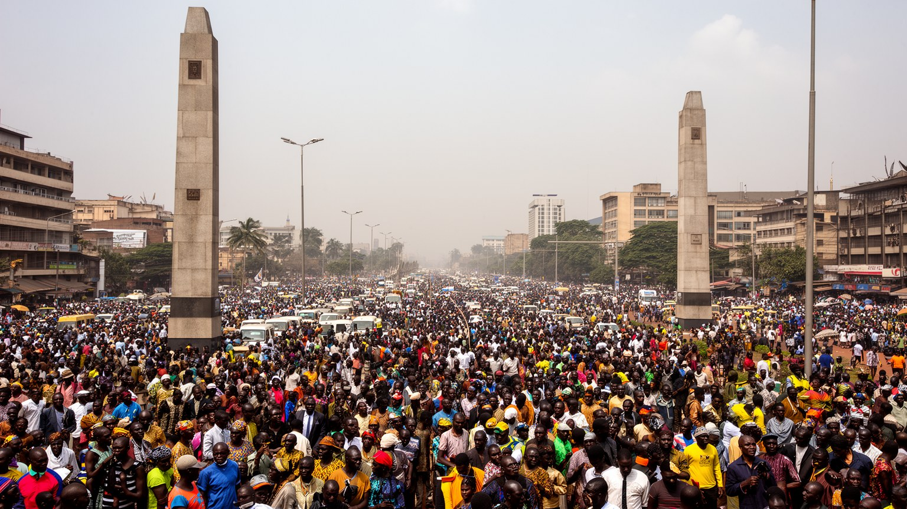
キンシャサはコンゴ民主共和国の政治首都であり、独立、冷戦、モブツ体制、二度のコンゴ戦争、選挙、抗議、国際支援、東部紛争への対応が集中する場所である。官庁、議会、大統領府、裁判所、大使館、国際機関、政党本部、メディアがここに集まり、地方の危機も首都の言葉で語り直される。だが、国家の中心であることは、市民が公共サービスを十分に受けられることと同じではない。停電、道路、学校、医療、治安、行政手続きの不透明さは、首都の住民にも重くのしかかる。政治は遠い権力ではなく、警察の検問、土地の書類、選挙集会、デモ、ラジオ討論、日常の冗談として街に現れる。独立の英雄や過去の指導者をめぐる記憶は、記念碑や地名だけでなく、家族史、亡命、弾圧、期待外れの経験にも残る。キンシャサを読むには、国家の威信を示す建物と、行政が届きにくい街区を同じ地図に置く必要がある。首都は国内の資源と外交資金が通る入口である一方、責任を問う市民の舞台でもある。新聞、ラジオ、SNSは噂と情報を素早く広げ、政治的緊張が交通や市場の空気を変えることもある。音楽家、牧師、学生、市場商人、タクシー運転手が政治を語る時、そこには制度への不信だけでなく、国を良くしたいという強い期待もある。キンシャサの政治的記憶は、祝賀と失望が混ざる公共空間に生きている。
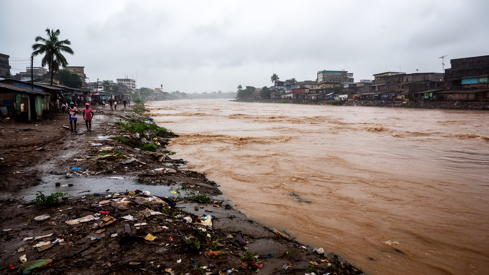
キンシャサの気候は熱帯サバナ気候で、暑さ、強い雨、乾季、川風が生活のリズムを作る。雨季には道路が泥に変わり、排水の弱い地区では浸水、斜面崩壊、廃棄物の流出、交通停止、感染症リスクが高まる。気候の問題は自然だけの問題ではない。急速な住宅拡張、排水路へのごみ、低地の宅地化、道路整備の遅れ、公共サービス不足が、雨を災害へ変える。暑さは屋外労働、学校、病院、停電時の家庭に負担をかけ、飲み水や衛生の不安は子どもや高齢者に強く影響する。コンゴ川の存在は涼しさと交通の可能性を与えるが、川岸の浸食、汚染、船の安全、低地の居住にも注意を要する。キンシャサを読むには、気候リスクを未来の予測としてではなく、すでに毎年の通勤、商売、通学、家の修理に入り込んでいる現実として見る必要がある。排水、廃棄物管理、斜面の保全、緑地、日陰、丈夫な橋、早期警戒、保健サービスは、目立たないが都市の生命線である。気候適応は富裕地区の景観整備だけでなく、未舗装道路の水たまりや市場の足元を改善することから始まる。雨の後に学校へ行けない子どもや、商品を濡らす露店の損失も、災害統計に表れにくい被害である。排水路をふさぐごみの回収、斜面に建つ家の補強、暑い教室の換気も、地味だが重要な適応策になる。強い雨は、都市が誰を危険な場所に住ませているかを容赦なく明らかにする。
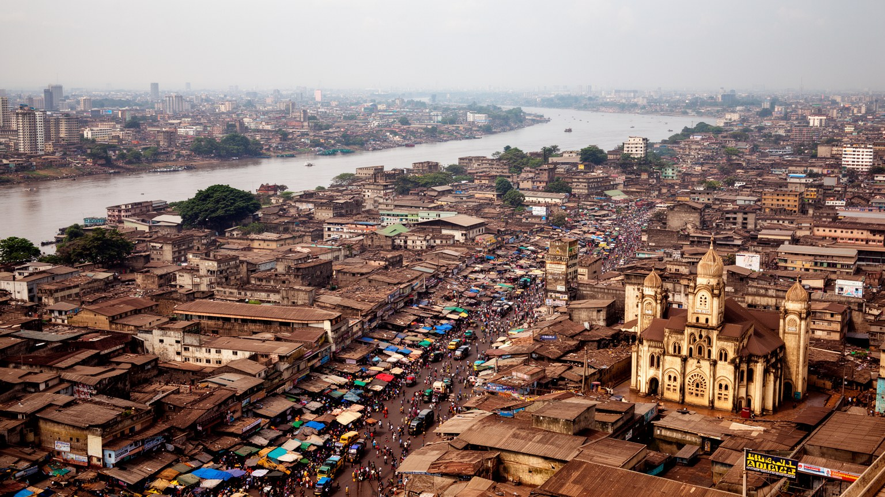
キンシャサを読むことは、巨大人口の数字だけでなく、コンゴ川、国家政治、リンガラ語の音楽、教会、非公式経済、住宅拡張、渋滞、雨季の水害を一つの都市として結び直すことである。ここは貧困や混乱の記号に還元できない。人びとは限られた制度の中で、商い、送金、親族関係、信仰、音楽、冗談、教育への期待を使い、毎日の都市を組み立てている。一方で、その工夫に頼りすぎれば、行政の責任、公共交通、上下水道、学校、医療、安全な住まいの不足が見えなくなる。キンシャサの強さは、困難を美談にするところではなく、脆い基盤の上でも文化と生活の密度を失わないところにある。旅行者にとっては、川辺、博物館、市場、音楽の夜が入口になるが、その背後には地方から来た家族、東部の紛争を気にする政治、鉱物経済から遠い生活、国際支援への期待がある。首都であることは国全体の希望と不満を集めることであり、巨大都市であることは小さな日常の判断が膨大に積み重なることである。都市の読み方を変えれば、混雑した道も無秩序ではなく、制度の不足と住民の創造力が同時に見える場所になる。キンシャサの未来は、道路や高層ビルの数だけでは測れない。川に近い危険な土地、学校へ向かう子ども、市場で働く女性、音楽を作る若者、礼拝で支え合う家族が、より安全に都市へ参加できるかで測られる。